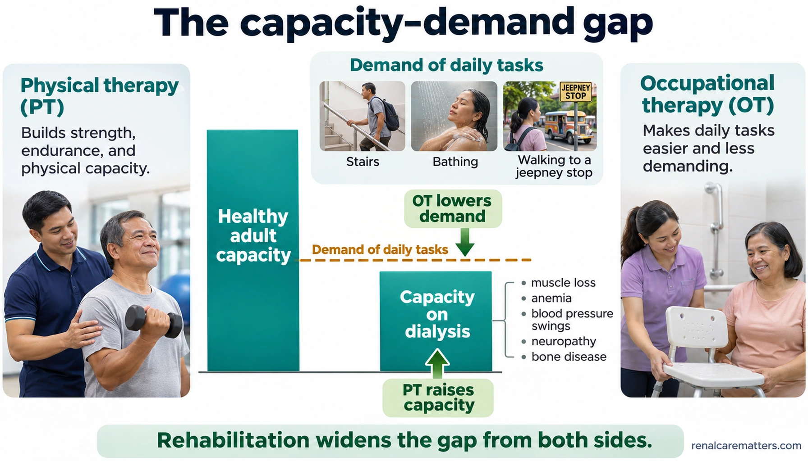
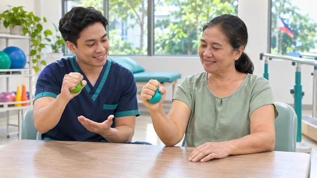
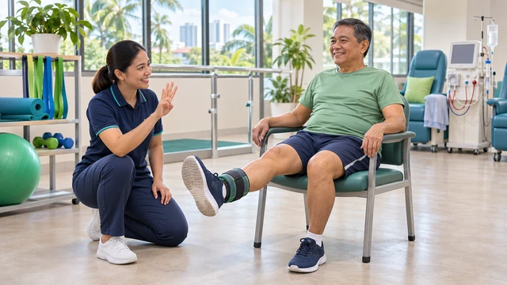
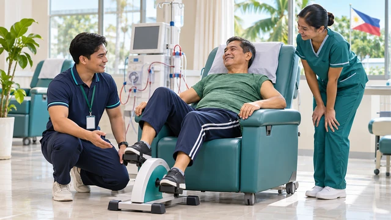
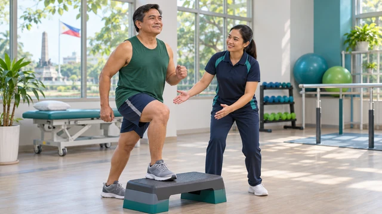
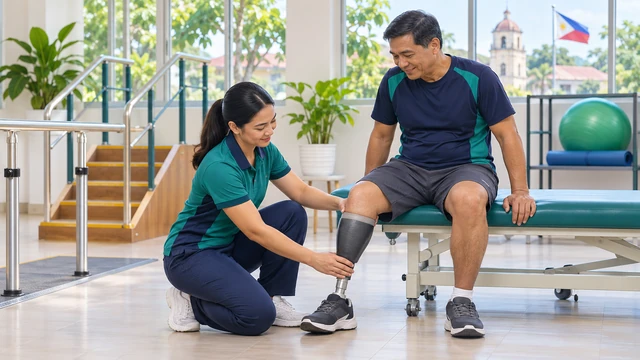
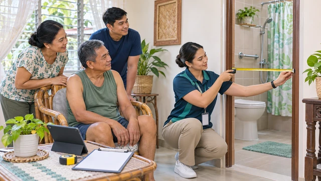
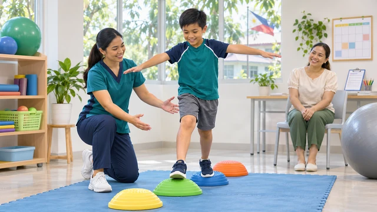

Movement is expensive in kidney failure. Your job is to make it affordable.
Ask a person on hemodialysis (HD) what they want back, and the answer is rarely a laboratory number. They want to walk to the jeepney stop without stopping, cook for their grandchildren, go back to work, climb to the third floor of their apartment, or simply get through a dialysis day without sleeping through the evening. Those are functional goals, and they are what occupational therapists (OTs) and physical therapists (PTs) are trained to restore.
The picture has a limit. Energy is not one currency. A person may have enough aerobic capacity to walk but not enough leg strength to rise from a low chair, or enough strength but too little balance to turn safely. Your assessment finds which account is short. Then the two professions work from opposite sides of the same gap: physical therapy raises capacity (strength, endurance, balance, transfers), and occupational therapy lowers demand (pacing, routines, equipment, home and work redesign). The evidence is real: in the largest trial so far, twelve months of supervised exercise during dialysis improved how many times patients could stand up from a chair in a minute and how far they walked, while patients receiving usual care declined.1

Figure 2 · What this track will help you do
Both professions study all twenty modules, because the patient needs both of you to understand the whole picture. Practice differs: occupational therapist (OT) learners demonstrate occupational analysis and adaptation; physical therapist (PT) learners demonstrate mobility and exercise prescription. Each module has an opening case, real situations, a skills checklist for your preceptor, and a self-assessment drawn from a bank of ten questions.
What this series is, and is not
It is a training track written independently from published laws, regulations, guidelines and research. It is not a Professional Regulation Commission (PRC), DOH, PhilHealth or Philippine Society of Nephrology (PSN) credential, not continuing professional development (CPD) units, and not a workplace privilege. No PSN renal therapist certificate and no national dialysis OT or PT staffing ratio exists, and this track does not imply one. It sets no universal exercise-clearance numbers: those come from the referring physician and your unit’s agreed parameters.
Who can hold this role
Occupational and Physical Therapist: qualifications at a glance
- Physical therapists: PRC-registered under RA 5680; treatment requires a physician’s prescription (Sec. 12). RA 5680
- Occupational therapists: PRC-registered under RA 11241, a separate profession with its own scope; works on referral. RA 11241
- The DOH and PSN dialysis rules list no renal OT or PT position, staffing ratio or renal therapist certificate; scope is the license, the referral and employer privileges. DOH, PSN
Sources: DOH Administrative Order No. 2012-0001, Sec. V.B.2.a; Philippine Society of Nephrology (2024), Guidelines for nephrologists in the operation of hemodialysis clinics, Sec. III.A; Republic Act No. 10862. A summary for orientation, not legal advice: check the current issuances, and your unit’s license and PhilHealth accreditation. The full table for every role is on the Academy home.
One renal foundation, two professions, five parts
Occupational and physical therapists learn the same renal foundations and then demonstrate different practice. Neither profession’s pathway authorizes the other’s interventions; in a module that emphasizes the other profession, you observe, analyze the co-referral, and produce the collaboration piece within your own scope.
Figure 3 · Choose your pathway
Figure 4 · The five parts
Your license, your referral, and the renal team’s plan
Three things must be true before you treat anyone in this track. First, you hold current Professional Regulation Commission (PRC) registration: physical therapists under Republic Act (RA) 5680, occupational therapists under RA 11241, which made occupational therapy a separate regulated profession in 2019.2,3 Second, the referral is in place: RA 5680 requires a physician’s prescription for PT treatment, and OT works on referral within RA 11241 and current PRC rules. Third, the renal team’s plan says what is safe today. A dialysis unit must have competent staff, medical oversight and safe systems under DOH Administrative Order 2012-0001, but that order sets no renal OT or PT staffing ratio.4
Twenty modules in five parts
Study in order. Each module starts with what is happening in the body, moves to what the evidence shows and how strong it is, and ends with what you do in your next session.
Part 1 · Foundations

Module 4 Protect Vascular Access and Prevent Infection How a fistula works and why pressure clots it, catheter rules, what exercise can and cannot do for a new fistula, and infection control for shared equipment. Module 5 Assess Function and Agree Measurable Goals Gait speed, sit-to-stand, the Short Physical Performance Battery, the six-minute walk and occupational performance, turned into goals the patient chose.Part 2 · Daily life and movement

Module 9 Design and Progress an Individualized Exercise Plan What training does to uremic muscle and heart, frequency, intensity, time, type, volume and progression (FITT-VP) in kidney failure, effort-based intensity, and progression that survives a dialysis week.
Module 10 Rehabilitation During Hemodialysis When and how to exercise in the chair, what Dialysis Training Therapy (DiaTT) and PrEscription of intraDialytic exercise to improve quAlity of Life (PEDAL) each showed, and how to build a program patients actually keep.Part 3 · Across the kidney care pathway

Module 13 Transplant Prehabilitation and Recovery Why frailty matters before a transplant, prehabilitation while waiting, and safe lifting and return to activity after surgery.
Module 14 Frailty, Bone Disease, Neuropathy and Limb Loss The frail dialysis patient, fragile bones, numb feet, and amputation: assessment and rehabilitation when several problems stack up.Part 4 · Participation and systems

Module 15 Home Equipment and Community Access The person–environment fit: stairs, toilets, bathing, commuting to dialysis, and equipment that costs little and helps a lot. Module 16 Mental Health, Work and Supportive Kidney Care Depression and symptom burden, returning to work around dialysis, and rehabilitation goals in conservative and end-of-life care.
Module 17 Children, Equity and Remote Rehabilitation Play, school and growth in children with kidney disease, barriers of distance and cost, and what remote rehabilitation can and cannot do. Module 18 Philippine Governance and PhilHealth Rehabilitation Pathways Who authorizes what: RA 5680, RA 11241, DOH dialysis rules, and PhilHealth’s rehabilitation package and its limits. Module 19 Documentation, Quality and International Service Models Notes that carry the decision, measures that show improvement, and what to borrow from the United States, United Kingdom, Australia and Canada.Part 5 · Capstone
The same seven steps every time
Figure 5 · How to work through a module
- ObjectivesRead what you should be able to do by the end.
- Big pictureA plain-words summary and the key terms, before any detail.
- Opening caseA fictional shift problem. Decide what you would do first.
- LessonShort parts with pictures, tables, and worked examples.
- Case reviewCompare your answer with one sound response.
- Skills checklistPractice with a preceptor on real or training equipment.
- Self-assessmentFive questions drawn from a larger bank, with explanations.
New terms are explained the first time they appear, and every page ends with a glossary. Abbreviations are spelled out at first use. If a sentence still reads like jargon, check the glossary, then ask your preceptor to show you the real object on the unit: most of this work makes sense faster when you can see and touch the equipment.
The series at a glance
Each module plans five hours: two of guided study (classroom), two of case workshop and simulation (skills lab), and one of supervised practice and portfolio work (placement). That is 100 hours in all, including the final examination and practical stations in Module 20. These are Academy design proposals, not a PRC, DOH or PhilHealth minimum.
| No. | Module | Lessons | Opening case | Skills checklist | Practice | Classroom (h) | Skills lab (h) | Placement (h) |
|---|---|---|---|---|---|---|---|---|
| 1 | The Renal Therapist Role and the First Referral |
| The referral that asked for too much | First contact and referral sorting | 10 questions · 3 real situations | 2 | 2 | 1 |
| 2 | Kidney Disease Through a Functional Lens |
| Four findings, four problems | Chart-to-function mapping | 10 questions · 3 real situations | 2 | 2 | 1 |
| 3 | Screen Before Movement and Respond to Deterioration |
| The final minute | Screen, decide and escalate | 10 questions · 3 real situations | 2 | 2 | 1 |
| 4 | Protect Vascular Access and Prevent Infection |
| The weight on the wrist | Access-safe practice and equipment turnover | 10 questions · 3 real situations | 2 | 2 | 1 |
| 5 | Assess Function and Agree Measurable Goals |
| A baseline for Mr. Villanueva | Baseline battery and goal setting | 10 questions · 3 real situations | 2 | 2 | 1 |
| 6 | Manage Fatigue and Rebuild Daily Routines |
| Aling Rosa’s Mondays | Fatigue assessment and energy budget | 10 questions · 3 real situations | 2 | 2 | 1 |
| 7 | Support Self-Care, Cognition and Treatment Routines |
| The full pillbox | Routine observation and teach-back | 10 questions · 3 real situations | 2 | 2 | 1 |
| 8 | Transfers, Gait and Falls Prevention |
| The near fall at the door | Fall risk assessment and safe transfer | 10 questions · 3 real situations | 2 | 2 | 1 |
| 9 | Design and Progress an Individualized Exercise Plan |
| Twelve weeks for Mang Jun | Exercise prescription and progression | 10 questions · 3 real situations | 2 | 2 | 1 |
| 10 | Rehabilitation During Hemodialysis |
| Twelve chairs and one bike | Intradialytic exercise set-up | 10 questions · 3 real situations | 2 | 2 | 1 |
| 11 | Daily Function with Peritoneal and Home Dialysis |
| The tricycle driver and the rice sacks | Activity planning in peritoneal dialysis | 10 questions · 3 real situations | 2 | 2 | 1 |
| 12 | AKI Hospitalization and Recovery After Critical Illness |
| Bed to chair with lines in place | Early mobility with kidney replacement therapy | 10 questions · 3 real situations | 2 | 2 | 1 |
| 13 | Transplant Prehabilitation and Recovery |
| Waiting fit | Prehabilitation and post-transplant planning | 10 questions · 3 real situations | 2 | 2 | 1 |
| 14 | Frailty, Bone Disease, Neuropathy and Limb Loss |
| The prosthesis that stopped fitting | Multimorbidity assessment | 10 questions · 3 real situations | 2 | 2 | 1 |
| 15 | Home Equipment and Community Access |
| Third floor, squat toilet, two jeepneys | Home and community assessment | 10 questions · 3 real situations | 2 | 2 | 1 |
| 16 | Mental Health, Work and Supportive Kidney Care |
| Back from Riyadh | Mood screening, work planning and supportive goals | 10 questions · 3 real situations | 2 | 2 | 1 |
| 17 | Children, Equity and Remote Rehabilitation |
| Two patients far from the gym | Pediatric orientation, equity and remote care | 10 questions · 3 real situations | 2 | 2 | 1 |
| 18 | Philippine Governance and PhilHealth Rehabilitation Pathways |
| Every chair exercise a claim? | Benefits navigation and functional evidence | 10 questions · 3 real situations | 2 | 2 | 1 |
| 19 | Documentation, Quality and International Service Models |
| Is the program working? | Documentation and a service measure | 10 questions · 3 real situations | 2 | 2 | 1 |
| 20 | Integrated Renal Rehabilitation Capstone |
| Mang Pedring’s week | Integrated capstone | 10 questions · 3 real situations | 2 | 2 | 1 |
| Total | 40 | 40 | 20 |
Self-assessment is not sign-off
Each module ends with a self-assessment of 5 questions drawn at random from a bank of 10; a good target is 4 of 5 on two different sets. Every question explains why the best answer is best. The end-of-course examination draws one question from each of the twenty modules (20 in all); the proposed pass is 16, 80 percent.
Clinical completion needs more than the examination: every portfolio artifact, every Critical checklist step demonstrated to a preceptor, and your profession’s six practical stations at 8 of 10 or better with no critical failure. A critical failure is never averaged into a pass. The trainer page has the eight stations, the scoring rule, and ten printable working templates.
End-of-course examination. When you have finished every module, take the end-of-course examination. It draws questions at random from all 20 modules, so no two sittings are the same.
What the series is built on
The track is built from published sources. Professional authority follows the Physical Therapy law (RA 5680) and the Philippine Occupational Therapy Law (RA 11241) through the Professional Regulation Commission;2,3 facility duties follow DOH Administrative Order 2012-0001;4 and payer rules follow PhilHealth’s rehabilitation circular and advisories.5,6 Clinical frameworks follow the Kidney Disease: Improving Global Outcomes (KDIGO) 2024 chronic kidney disease guideline, the UK Kidney Association exercise and lifestyle guideline, and the International Society for Peritoneal Dialysis (ISPD) and Global Renal Exercise Network practice points.7,8,9
Statements about outcomes rest on peer-reviewed trials, cohorts and reviews, including the Dialysis Training Therapy (DiaTT), PrEscription of intraDialytic exercise to improve quAlity of Life (PEDAL), CYCLE-HD and Exercise Introduction to Enhance Performance in Dialysis (EXCITE) trials of exercise in dialysis, a Cochrane review, and cohorts on falls, fractures, cognition, depression and physical performance.1,10,11,12,13,14,15 Where evidence is observational, the text says “associated with”; where an outcome is a surrogate (a heart scan, a vein diameter), it says so. Regulatory statements were checked on November 25, 2026; confirm every circular’s current status before you rely on it.
Using the series in a training program
A rehabilitation lead, a physiatrist, a senior OT or PT, or a renal nurse educator can use these modules as the guided-study part of a therapist’s renal orientation. The trainer and preceptor page gathers the proposed hours, completion criteria, and every skills checklist in one printable place. These are proposals for a provider to adapt and validate on its own equipment; they are not requirements of any regulator.